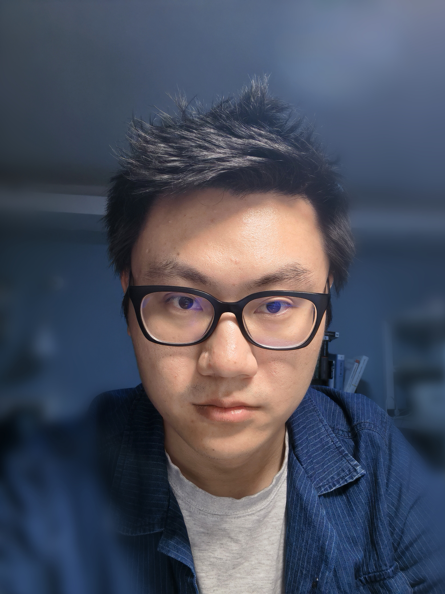

Xin Su (苏鑫)MindSpore(EN, CN) AI Framework Developer
|
 |
 [Curriculum Vitae]
[Curriculum Vitae] [Github]
[Github]Previously, I was a master student at SIMIT, Chinese Academy of Sciences from 2015 to 2019, advised by Prof. Xing Wei. As a trainee on contract, I studied at Department of Electronic Science and Technology, University of Science and Technology of China (USTC) from 2015 to 2016. I received my M.Eng. degree and B.Eng. degree from SIMIT, University of Chinese Academy of Sciences (UCAS) and School of Micro-Electronics and Solid-State Electron, University of Electronic Science and Technology of China (UESTC) in 2019 and 2015, respectively.
Research
I have broad interests in natural language processing (NLP), particularly in dialogue systems and natural language generation. As two long-term goals, I expect to achieve:
- Building practical and intelligent dialogue systems. I am excited about simple and effective approaches that can be generalizable to real-world conversation scenarios.
- Developing principled and fundamental methods for natural language generation. I am interested in how human knowledge (e.g., factual, commonsense, etc.) can be reasoned and used in natural language generation.
Recently, I am dedicated to target-driven dialogue systems, with the objective of endowing a system with the ability to proactively lead the conversation.
Career Experiences
- 2019/06 - now: Software Engineer at Technologies Co., Ltd.
- 2017/02 - 2019/06: Research intern at Shanghai Simgui Technologies Co., Ltd. (Advisor: Prof. Xing Wei and Prof. Lu Fei)
Publications
2019
-
Silicon-on-insulator with highly uniform top Si fabricated by H/He co-implantation.
Xin Su, Nan Gao, Meng Chen, Hongtao Xu, Xing Wei and Zengfeng Di.
Chinese Physics letters, 2019, 36(6):068501
[paper] -
Investigation on Evolution of Oxygen Precipitates in Bonded SOI Substrates
Xin Su, Nan Gao, Meng Chen, Hongtao Xu, Xing Wei and Zengfeng Di.
ECS Journal of Solid State Science and Technology, 2019, 8(3):186-189.
[paper]
2018
-
Bonding method for semiconductor substrate, and bonded semiconductor substrate.
Xing Wei, Xin Su, Hongtao Xu, Meng Chen, Nan Gao.
US Patent, US20200098703A1
[paper] -
Investigation of radiation hardened SOI wafer fabricated by ion-cut technique.
Yongwei Chang, Xing Wei, Lei Zhu, Xin Su, Nan Gao and Yeming Dong.
Nuclear Instruments & Methods in Physics Research, 2018, 426:1-4.
[paper] -
Resistivity and Radio-frequency Properties of Two-Generation Trap-Rich Silicon-on-Insulator Substrates.
Lei Zhu, Yongwei Chang, Nan Gao, Xin Su, Yeming Dong, Lu Fei, Xing Wei and Xi Wang.
Chinese Physics Letters, 2018, 35(4):047302-.
[paper] -
Effects of Low Boron Concentration on Electrical Properties of Commercial Trap-Rich High Resistivity SOI Substrate.
Lei Zhu, Yongwei Chang, Nan Gao, Xin Su, Yemin Dong, Lu Fei, Xing Wei and Xi Wang.
ECS Journal of Solid State Science and Technology
[paper]
Research Program Experience
- National Science and Technology Major Project： "The project of manufacturing technology and complete sets of technology for very large scale integrated circuits", "Layer transfer Ultra-thin SOI Material Technology Development".
Awards
-
Bacon Prize – Knowledge is Power
Corporate Quality Dept, Cooperate Level, Huawei. January 2021
-
Future Star
Departmental Level, Huawei. 2020&2019
-
Consumer BG Hardware Engineering and Product Dept President’s Commendation
Consumer BG, Huawei. twice 2020
Open-Source Projects
- 📖 Paper-Reading: Reading list in dialogue systems and natural language generation (constantly updating 🤗).
- 🐳 PyLoader: An asynchronous Python dataloader for loading big datasets.
Useful Resources
- ⏳ AI Conference Deadlines: Countdowns to top CV/NLP/ML/Robotics/AI conference deadlines.
- 📝 Writing Perfect Papers: A long talk on how to write perfect papers (by Prof. Baochun Li @UofT).
- 📰 Sebastian Ruder's Blog: Sebastian Ruder's blog with deep insights about NLP/ML/DL.
- 🍑 Lilian Weng's Blog: Lilian Weng's blog with broad learning notes about DL/NLP.
- 📸 Jay Alammar's Blog: Visualizations and animations for many language models (Transformer, BERT, etc).
- 📡 Scientific Spaces: Jianlin Su's blog (in Chinese) about ML|NLP theories with deep explorations.
- 👩🎓 Global Equality for PhDs: Resources to help global equality for PhDs in NLP/AI.
- 🐳 C++ Core Guidelines: This is a set of core guidelines for modern C++
Misc.
-
I enjoy Chinese calligraphy and most of outdoor sports (especially basketball, table tennis, badminton). I also spend a lot of time on reading and movies.
-
I dream to travel around China, I also dream to travel around the world someday.